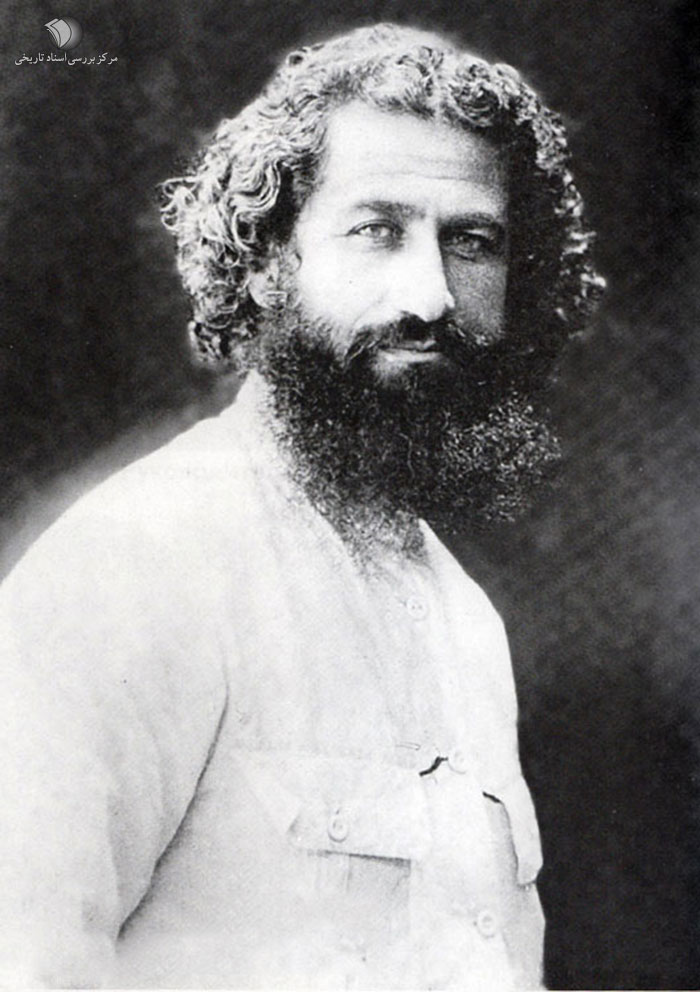

این یک وبسایت جهت آشنایی با آثار تاریخی و باستانی استان گیلان است.
شما فقط با چند دقیقه زمان می توانید تا حدودی با آثار تاریخی یک استان آشنا شوید.
قلعه رودخان فومن
مشخصات قلعه
دژ رودخان یا قلعه حسامی نام قلعهای است متعلق به دوره امپراتوری ساسانی که بر فراز ارتفاعات جنگلی شهرستان فومن در روستای رودخان ساخته شده و ۲٫۶ هکتار مساحت و ۶۵ برج و بارو و دیواری به طول ۱۵۰۰ متر دارد. دژ رودخان در ۳۰ کیلومتری شهر فومن است.مردم روستای قلعه رودخان به زبان تالشی تکلم میکنند .
این قلعه بدون شک یکی از بزرگ ترین و شکست ناپذیر ترین قلعه های ایران باستان بوده است اما متاسفانه فقط ۱۰ درصد بنا مرمت شده و باقی با بیکفایتی مسئولین با توجه به درامد سالانه ۵۰۰ هزار دلاری تجدید بنا نشده است.
ُاین دژ با ارزش تاریخی که دارد بنابر ساختار، معماری و ویژگیهای استراتژیکی و رزمی، ۳۰ مرداد ۱۳۵۴ خورشیدی، به شماره ۳/۱۵۴۹ در فهرست آثار تاریخی و ملی ثبت شد.
تاریخچه
اکثر کارشناسان، ساخت قلعه را در دوران ساسانیان و مقارن با حمله عربها به ایران دانستهاند. در دورهٔ سلجوقیان این قلعه تجدید بنا شده و از پایگاههای مبارزاتی اسماعیلیان الموت بودهاست.
بر روی کتیبه سردر ورودی قلعه که اکنون در موزهٔ گنجینهٔ رشت نگهداری میشود، درج شده که این قلعه در سال ۹۱۸ تا ۹۲۱ هجری قمری برای سلطان حسامالدین تجدید بنا شدهاست. امیره حسام الدین دباج فومنی (مظفرالسلطان)، فرمانروای بیهپس اولین قدرت منطقهای بود که از اطاعت از صفویان سرپیچی کرد، و قلعه رود خان را بازسازی کرد تا از آنجا به مقاومت بپردازد او سپاه صفویان را دچار دردسر های بسیاری در قلعه رودخان کرد و شکست سختی به سپاه انگلیسی ها وارد نمود ولی سپس موفقیتی به دست نیاورد و به دربند گریخت و نهایتاً دستگیر و در تبریز اعدام شد.
توصیف قلعه
قلعه رودخان از دو بخش ارگ و قورخانه تشکیل شدهاست. ارگ در قسمت غربی این بنا در دو طبقه واقع شده و جنس آن از آجر است. قراولخانهها در قسمت شرقی در دو طبقه با نورگیرها و روزنههای متعدد بر اطراف مسلط است. چشمهای نیز میان قلعه و گودترین محل آن وجود دارد.
بخش شرقی قلعه شامل دوازده ورودی، زندان، در اضطراری، حمام و آبریزگاه است. بخش غربی دوازده ورودی دارد، چشمه، حوض، آبانبار، سردخانه، حمام، آبریزگاه شاهنشین و چند واحد مسکونی که با برج و بارو محصور شدهاند، دیگر بناهای این بخش را تشکیل میدهند. ۴۰ برج دیدهبانی دور تا دور قلعه را احاطه کرده که اتاقهای هشت ضلعی آن با طاقهای گنبدی پوشانده شدهاست. دور تا دور دیوارها و برجها روزنههایی شیبدار دیده میشود که برای ریختن مواد مذاب و تیراندازی تعبیه شدهاند. لازم است ذکر شود که در طول تاریخ قلعه، هیچگاه دشمنی به آن نفوذ نکرده و نتوانسته آن را فتح کند.
دلیل نام گذاری
زبان مردم محلی از دیرباز تالشی بوده است ؛ و نام قلعه در زبان تالشی قلعه روخون است. نام قلعه رودخان، مترادف فارسی نام تالشی قلعه است. چون این قلعهٔ تاریخی در کنار رودخانه، بنا شدهاست؛ آن را قلعه رودخانهای نامیدهاند. این قلعه در دورههای گوناگون به نامهای قلعهٔ هزار پله، حسامی، سکسار، سگسار و سگسال نیز خوانده شدهاست.
ویژگی زمین شناسی
قلعه رودخان از نظر زمینشناسی در منطقهای بنا شده که در تقسیمبندی زمینشناسی به مجموعه گشت شهرت دارد و طبق بررسیهای اشتوکلین شامل دو فاز دگرگونی است. اولی مربوط به پرکامبرین-پالئوزوئیک با شدت دگرگونی بالا است و دیگری به زمان مزوزوئیک و با شدت دگرگونی پایین مطلق است.
پل خشتی لنگرود
پل خشتی لنگرود به عنوان معروفترین بنای تاریخی و نماد شهر لنگرود شناخته میشود که از آجر و ساروج ساخته شدهاست. این پل تاریخی برروی رودخانه لنگرود که از یکی از آبراهههای سفیدرود سراریز میشود و از مرکز شهر لنگرود عبور میکند ساخته شده و محلههای قدیمی «فشکالی محله» و «راه پشته» را به یکدیگر متصل میکند. در زبان گیلکی لنگرودی به این پل، خَشته پٌل و خَشته پورد نیز میگویند.
تاریخ ساخت
از زمان دقیق ساخت این پل و سازنده آن هیچ سند معتبری در دست نیست ولی حدود ساخت این پل، بنا بر نوشته محمود پاینده لنگرودی (محقق برجسته لنگرودی) و بر اساس استناد به کتاب تاریخ خانی بعد از سال ۹۱۲ هـ. ق و در دوران صفویه است. این پل در چهار دوره مرمت اساسی گردید که اولین مرمت در اواخر دوره قاجاریه، مرمت دوم در زمان پهلوی اول توسط حاج حبیب لِمَنجویی که با ریختن سرب در اطراف پایه اصلی پل استحکام این پل را تقویت نمود، مرمت سوم در زمان پهلوی دوم سال ۱۳۳۷ توسط اداره کل حفاظت آثار باستانی و بناهای تاریخی با تعویض اجرهای پودر شده با اجرهای جدید و نهایتاً مرمت چهارم در سال ۱۳۹۷ توسط اداره میراث فرهنگی با تعویض خشتهای خارجی تخریب شده و بند کشی کل خشتها و تعویض فرم لبههای پل به شکل نوک تیز انجام شد.
مشخصات پل
پل از یک سطح میانی و دو بخش جانبی شیب دار تشکیل شده و طول قسمت اول آن ۱۰/۱۵ متر و دو قسمت جانبی ۱۰ الی ۱۱ متر است. عرض پل در قسمت میانی و بین دو جان پناه ۳۴۵ تا ۳۵۰ سانتیمتر و عرض قسمت جان پناهها هر یک ۴۵ و ارتفاع آنها ۳۵ سانتیمتر است. عرض کلی پل ۴۳۰ سانتیمتر است. محل عبور عابر پیادهروی پل را در مرمتهای اخیر با قلوه سنگ مفروش ساختهاند. پل دارای دهانه با طاق جناقی نسبتاً کند است. دو فرو رفتگی در پیشانی پل و در فاصله بین دو قوس قرار دارد. هر یک از قوسها در سمت بیرونی دارای یک نوار آجرکاری به عرض ۱۲ سانتیمتر است که حالتی تزیینی و برجسته دارند. علاوه بر آن در کنارهٔ قوسها آجر چینی خاصی نیز انجام شده و حاشیهای به عرض ۶۰ سانتیمتر را به وجود آوردهاست. پایه میانی قطور پل ۴ متر عرض دارد و دو موج شکن یا سیل برگردان در دو طرف پل برای کاستن از فشار آب در ایام افزایش سطح آب تعبیه شدهاست. یک دهانه کوچک بین پایه میانی پل و یک طاق نمای جناقی بر بالای آن با عرض ۵۰ سانتیمتر وجود دارد. پل خشتی لنگرود به علت قرارگیری در مرکز شهر و همچنین جنس مواد استفاده شده در ساخت آن، همیشه مورد توجه و اهمیت بودهاست و معماری این پل در میان تمام پلهای خشتی منحصر به فرد بوده و نمونه پل خشتی لنگرود با این مشخصات نه تنها در ایران بلکه در هیچ جای جهان وجود ندارد.
موزه چای لاهیجان
آرامگاه محمد میرزا قوانلو ملقب به کاشف السلطنه (موزه تاریخ چای لاهیجان) مربوط به دوره معاصر است و در لاهیجان، خیابان کاشف شرقی نرسیده به سراه کشاورزی واقع شدهاست. این اثر در تاریخ ۲۶ آبان ۱۳۷۵ با شمارهٔ ثبت ۱۷۶۹ بهعنوان یکی از آثار ملی ایران به ثبت رسیدهاست.
موزه لاهیجان یکی از جاذبههای گردشگری شهرستان لاهیجان است که ابتدا به عنوان مقبره کاشف السلطنه مورد بازدید قرار میگرفت، با تکمیل ساختمان نیمه کاره مجاور آرامگاه و از سال ۱۳۷۵ به عنوان موزه تاریخ چای ایران مورد بهرهبرداری قرار گرفت.
این موزه از یک سالن اصلی دو طبقه، یک برج و دو فضای اداری شمالی و جنوبی تشکیل شدهاست. طبقه همکف از سالن اصلی بنا، به اسناد و مدارک مرحوم کاشف السلطنه و وسایل مربوط به چای و چاینوشی اختصاص داده شده و طبقه دوم بنا را ویترینها و اقلام مردمشناسی تشکیل میدهند.
غار دربند رشی رودبار
غارهای دربند رشی (۵۰°۳۶′ شمالی، ۳۹°۴۹′ شرقی) در جنوب روستای رشی، بخش رحمتآباد و بلوکات، شهرستان رودبار، استان گیلان، و در ارتفاع حدود ۷۵۰ متر از سطح دریا واقع شده است. قلهٔ درفک با ارتفاع نزدیک به ۲۷۳۳ متر نیز در این منطقه قرار دارد. این مکانهای باستانی شامل غار کویلگر با طول تقریبی ۶۰ متر و غار جوکویله با طول تقریبی ۳۰ متر است که دهانه هر دو در جهت جنوب قرار دارد.
پیشینه مطالعات
غارهای دربند رشی نخستین بار توسط ولی جهانی (باستانشناس) در سال ۱۳۸۴ شناسایی و بررسی شد. در بررسی اولیه، قطعات سفال (هزاره اول پیش از میلاد) و بقایای استخوان جانوران و انسان گردآوری شد. پروندهٔ ثبت غار نیز در مرداد ۱۳۸۴ با شماره ۱۳۲۱۹ به ثبت آثار ملی رسید.
در سال ۱۳۸۶، پژوهشگران موزه ملی ایران شامل فریدون بیگلری، سونیا شیدرنگ و ولی جهانی بررسیهای تکمیلی انجام دادند. آنها علاوه بر بقایای جانوران، ابزارهای سنگی شامل یک ساطور، تراشه روتوش شده و ضایعات تراش سنگ را یافتند که مربوط به دورهٔ پارینهسنگی قدیم بودند.
اولین فصل گمانهزنی در اردیبهشت ۱۳۹۱ با سرپرستی بیگلری و معاونت ولی جهانی و همکاری متخصصان میانرشتهای انجام شد. نتایج این بررسی شامل مجموعهای غنی از بقایای باستانشناختی و دستساختههای سنگی بود که شناخت دورههای پیشاتاریخی ایران را تسهیل کرد.
اهمیت
طبق تاریخگذاری بقایای سنگواره و فناوری دستساختههای سنگی، غار در اواخر دورهٔ پارینهسنگی قدیم (حدود ۲۰۰–۲۵۰ هزار سال پیش) و در دورهای نسبتاً گرم و مرطوب مورد استفادهٔ فصلی شکارگران عصر سنگ بوده است. ساکنان غار حیواناتی چون گاو وحشی، گون و بزکوهی را شکار میکردند و ابزارهای سنگی خود را از سنگهای آذرین و آتشزنه میساختند. کشف بقایای گونهٔ منقرضشدهٔ خرس غار نشان میدهد که غار در فصول سرد محل زمستانخوابی این گونه بوده است.
با توجه به اهمیت تاریخی و طبیعی مجموعه، پیشنهاد ثبت آن در فهرست میراث جهانی یونسکو مطرح شده است.
وضعیت موجود
این غارها در درهٔ دربند و محدودهٔ جنگلهای هیرکانی واقع شدهاند و دارای چشمانداز بکر و دستنخورده هستند. با وجود جاذبههای طبیعی، بازدید بدون مدیریت باعث انباشت زباله، آسیب به پوشش گیاهی، یادگارنویسی بر دیوارهها و شکستن چکندههای طبیعی شده است. همچنین جمعیت خفاشهای ساکن غار کاهش یافته است. اقدام اداره کل میراث فرهنگی گیلان برای بهرهبرداری از غارها به عنوان رستوران و بازارچه صنایع دستی با انتقاد رسانهها مواجه شد.
میرزا کوچک خان رشت
یونس استادسرایی (۲۱ مهر ۱۲۵۹ – ۱۱ آذر ۱۳۰۰) معروف به میرزا کوچک خان جنگلی، کنشگر و مبارز ملیگرای ایرانی، رهبر انقلابی جنبش جنگل در دوره انقلاب مشروطه و پس از آن و رئیس جمهوری شورایی سوسیالیستی ایران بود. او در ۱۱ آذر ۱۳۰۰ در راه رفتن به خلخال و پناهبردن به عظمت خانم فولادلو به همراه یار خود گائوک در «ییلاق آلاله پشته» واقع در ارتفاعات ماسال اسیر برف و بوران شده و جان باختند.

او که در جوانی به تحصیل دینی اشتغال داشت جزئی از نیروهای انقلابی بود که در جریان جنبش مشروطیت موفق به فتح تهران شدند. سپس به گیلان برگشت و رهبری نهضتی را بر عهده گرفت که قصدشان آزادسازی این ایالت ایران از اشغال روسیه بود؛ نهضتی که به نهضت جنگل مشهور شد. کوچک خان گروههای مختلفی از نیروهای سیاسی و طبقات ناراضی را گرد خود جمع کرد. او موفق شد که هدف انقلاب را از مشروطه خواهی ضد اجنبی به جمهوریخواهی سوسیالیستی سوق دهد و در ژوئن ۱۹۲۰ یک جمهوری شورایی در گیلان به پا کرد. کمبود منابع مالی، اختلافات درونی و حمله نظامی نیروهای دولت مرکزی به رهبری رضاخان سردار سپه و بریتانیا منجر به سقوط این حکومت شد.
سوابق اجتماعی و سیاسی میرزا کوچک خان
میرزا یونس معروف به میرزا کوچک فرزند میرزا بزرگ در ۲۱ مهر ۱۲۵۹ ه.ش در محله قدیمی استادسرا شهر رشت در خانوادهای متوسط و مذهبی چشم به جهان گشود. وی سنین آغاز عمر را در مدرسه علمیه حاج حسن (صالح آباد) و مدرسهٔ جامع شهر رشت به آموختن صرف و نحو و تحصیلات دینی گذرانید. پس از آن به قزوین رفته و در مدرسهٔ صالحیه تحصیل دروس حوزوی را ادامه داد و چندی هم در مدرسهٔ محمودیهٔ تهران به همین منظور اقامت گزید. پایه آموزش حوزوی میتوانست وی را در سلک روحانیان درآورَد، اما حوادث و انقلابات کشور مسیر افکارش را تغییر داد و او را به راهی دیگر کشاند.
میرزا کوچکخان دارای دو خواهر به نامهای کربلایی خانم و سارا خانم و دو برادر به نامهای میرزا محمدعلی خان و میرزا رحیم خان بود، که هر دو بعد از میرزا وفات یافتند. بنا به گفتهٔ اطرافیان، میرزا مردی قوی بنیه، زاغ چشم و دارای سیمایی متبسم بود و از نظر اجتماعی مردی باادب، فروتن، خوشبرخورد، مؤمن به اصول اخلاقی، صریحاللهجه، طرفدار عدل و آزادی و حامی مظلومان بود. میرزا کوچکخان اهل ورزش بود و از مصرف مشروبات الکلی و دخانیات خودداری میکرد. میرزا در سنین آخر عمر همسری برگزید.
میرزا در واقعهٔ مشروطیت به انقلابیون جبههٔ شمال پیوست و در فتح قزوین شرکت داشت. روسها مدتی او را از رشت تبعید کردند. در سال ۱۲۹۳ ه.ش میرزا که تازه از تبعید آزاد شده و به رشت آمدهبود به شدت تحت تأثیر ظلم و ستم نیروهای روس بر مردم گیلان قرار گرفت و تصمیم گرفت که به کمک دوستان مشروطه خواه خود دوباره دست به قیام بزند. اما این بار علاوه بر مطالبهٔ آرمانهای آزادی خواهانهٔ مشروطه که آن را بر باد رفته میدید به دنبال نجات ایران و علیالخصوص گیلان از اشغال آشکار نیروهای نظامی اجنبی نیز بود. افکار میرزا توانست در دل قشرها و طبقات گوناگون مردم گیلان نفوذ کند. افرادی نظیر دکتر حشمت و میرزا حسین کسمایی که از چهرههای تحصیل کرده و فرهیختهٔ گیلان بودند، یا حسن آلیانی و شیخ علی شیشه بر که از طبقات معمولی جامعه بودند در میان طیف طرفداران میرزا دیدهمیشوند؛ و به جز اینها میرزا توانست از حمایت چند تن از بازرگانان و کسبه معتبر از جمله حاج احمد کسمایی نیز برخوردار شود. تاریخنگاران عمدتاً قیام جنگل را به دو دوره مجزا تقسیم میکنند، که دورهٔ نخست در ابتدا به مدت پنج سال و به مرکزیت فرماندهی در کسما، و سپس به مدت نزدیک به دو سال به مرکزیت زیده و به صورت یک حکومت جمهوری مستقل در کل ایالت گیلان بوده است. دوره دوم مصادف با نزدیکی طرفداران انقلاب بلشویک ها به میرزا کوچک میباشد.
هوشنگ نهاوندی در مصاحبه با پروژه تاریخ شفاهی ایران از قول پدرش که مترجم مورد اعتماد میرزا کوچک خان در مذاکرات با روسها بوده است و در بیشتر مذاکرات میرزا حضور داشته است، گفته است:
میرزاکوچکخان یک آدم ملی بود و بههیچوجه بلشویک و طرفدار شورویها نبود… او نسبت به رضاخان سردار سپه اظهار خوشبینی کرده بود در چند مورد و خیلی هم میسر بود به اینکه میان ایشان و رضاخان یک التفاتی ایجاد بشود که گویا اطرافیان دو طرف نگذاشتند… میرزاکوچکخان یک ناسیونالیست سادهلوح بسیار با شرف مردمی پایبند رأی و عقیده خودش بود.
دورهٔ اول جنبش جنگل (۱۲۹۸–۱۲۹۳)
میرزا پس از جمع کردن دوستان و همفکرانش به لوشان رفت و قیام ضد بیگانه اش را آغاز کرد. این زمان مقارن بود با آغاز جنگ جهانی اول. قوای روس بدون توجه به اعلام بیطرفی دولت ایران، در مناطق شمالی ایران نیروی نظامی پیاده کردهبودند که این نیروها باعث آزار و اذیت و گاهی دزدی و چپاول و تجاوز به حریم عامه مردم، علیالخصوص کشاورزان و دامداران و تجار و کسبه میشدند. از دست دولت مرکزی ایران هم کاری ساختهنبود. تظلم خواهی و رد اشغال ایران از طرف قوای بیگانه مهمترین انگیزه مردم گیلان برای حمایت از افکار میرزا کوچک خان در دوره اول بود؛ لذا در یک فاصله زمانی کوتاه، تعداد کثیری از مردم (خصوصاً جوانان)، داوطلب همکاری با میرزا شدند. جنگلیها اغلب با استفاده از عملیات کمین یا شبیخون به منافع روسها یا عناصر وابسته به آنها ضربه میزدند. قوای روس و البته نیروهای داخلی وابسته به آنها بارها تلاش کردند جنگلیها را سرکوب کنند اما کاری از پیش نبردند و عمدتاً شکست خوردند که از جمله این نیروهای وابسته که از جنگلیها شکست خوردند میتوان به لوطی عبدالرزاق و مفاخرالملک اشاره کرد.
در این دوره جنگلیها هیئتی به نام هیئت اتحاد اسلام تشکیل دادند که اداره امور مناطق تحت کنترل، و تصمیمگیریهای کلی توسط این هیئت انجام میشد. آنها هدف خود را «اخراج نیروهای بیگانه، رفع بیعدالتی، مبارزه با خودکامگی و استبداد و برقراری دولتی مردمی» اعلام میکردند. هیئت اتحاد اسلام نامی بود که طرفداران عثمانی در کشورهای مختلف اسلامی برای خود انتخاب میکردند. شاید در نگاه اول، انتخاب این نام و در کنار آن حضور چند افسر آلمانی و اتریشی در بین جنگلیها، خواننده را به این نتیجه برساند که جنبش جنگل ستون پنجم دول محور بوده و فاقد جایگاه ملی است، اما نباید فراموش کرد که دولت ایران در جنگ جهانی اول رسماً اعلام بیطرفی نموده و این بیطرفی را نیز در عمل ثابت کردهبود و این نیروهای روس (در شمال) و انگلیس (در جنوب) بودند که بدون توجه به این بیطرفی، در ایران نیرو پیاده کردند و جدای از این برای تأمین آذوقه و مایحتاج خود به کشاورزان، دامداران، تجار و کسبه تعدی میکردند و جنبش جنگل، حرکتی بود که از تظلم خواهی عامه مردم ریشه میگرفت و نه تحریک بیگانه (دول محور). دولت مرکزی ایران که خود از نقض بیطرفی ایران از سوی متفقین به شدت ناراضی بود، قلباً حرکتهای مردمی را علیه اشغالگران میستود؛ بنابراین در این دوره دولت ایران سعی میکرد با جنگلیها کج دار و مریز رفتار کند. در طرف مقابل هم جنگلیها سعی میکردند وفاداری و احترام خود را به دولت مرکزی ایران نشان دهند، لذا با نماینده دولت مرکزی (حشمت الدوله) و حتی خود رئیسالوزرا (مستوفی الممالک) مکاتبه و مراوده داشتند.
بعد از انقلاب بلشویکی روسیه ۱۹۱۷ نیروهای روس از ایران خارج شدند و در این خروج قوای جنگل راه را برای آنها هموار کردند. اما آخرین دسته روسها، یعنی قوای ژنرال بیچراخوف که دارای افکار تزاری بود، وضعیتی متفاوت داشت. او با انگلیسیها به فرماندهی ژنرال دنسترویل متحد شده بود که به قفقاز برود و در آنجا با بلشویکها بجنگد. انگلیسیها از میرزا خواستند که ضمن اجازه عبور قوای بیچراخوف و قوای انگلیس از گیلان، تعدادی از پاسگاهها را نیز در اختیار آنها قرار دهند تا به وسیله آن تدارکات پشت جبهه قفقاز میسر شود. میرزا قبول نمیکند و به ناچار در کنار پل منجیل جنگ سختی درمیگیرد. قوای روس به وسیله توپخانه دوربرد بر قوای جنگل که آرایش نظامی نامناسبی داشتند پیروز میشود و راهی انزلی میگردد؛ و رشت نیز به دست قوای انگلیس میافتد. البته بعد از آن جنگلیها به هر ترتیب که شده، رشت را آزاد میکنند، ولی این آزادی دیری نمیپاید و انگلیسیها دوباره رشت را تصرف میکنند. سرانجام با وساطت کنسول فرانسه بین جنگلیها و انگلیسیها آتشبس برقرار میشود.
همین ایام در تهران وثوق الدوله به قدرت میرسد. او ابتدا به میرزا پیشنهاد میکند که ضمن تأمین جانی به عتبات برود و قوایش را در اختیار دولت قرار دهد. وثوق الدوله بعد از مخالفت میرزا با این پیشنهاد، تیمورتاش را با بیست هزار قزاق به عنوان والی گیلان فرستاد تا جنگلیها را سرکوب کند. در این روزها بود که حاج احمد کسمایی، یکی از سران مؤثر جنگل خود را تسلیم کرد. میرزا که نمیخواست با هموطنانش بجنگد تصمیم گرفت با افرادش به سمت شرق گیلان عقبنشینی کند. جنگلیها به دستههای کوچک تقسیم شدند و با پای پیاده به سمت شرق گیلان تا نواحی تنکابن حرکت کردند. در این راهپیمایی طولانی، عدهای از جنگلیها از پای درآمدند و عدهای هم اسیر شدند. به مرور زمان برخی جدا و بخشی هم تسلیم شدند. از جمله آنها دکتر حشمت بود که نیروهای قزاق توسط اماننامهای، مهر و امضا شده در پشت یک جلد قرآن او را فریب داده و به قول خویش وفا نکردند و سرانجام دکتر حشمت در رشت اعدام شد. میرزا پس از راهپیمایی طولانی در جنگل دوباره به فومنات، یعنی همان پایگاه آغازینش برمیگردد و این پایان دوره نخست جنبش جنگل است.
دورهٔ دوم جنبش جنگل (۱۳۰۰–۱۲۹۸)
قوای دولتی نتوانستند میرزا را دستگیر کنند، لذا جنبش جنگل همچنان به بقای خود ادامهداد. رفته رفته جنگلیها همدیگر را پیدا کردند و دوباره قدرت گرفتند. از طرفی دولت وثوق الدوله بعد از مخالفت سراسری با قرارداد ۱۹۱۹ احساس بیثباتی میکرد، لذا نمایندهای نزد میرزا فرستاد که تا بازشدن دوره جدید مجلس بین قوای دولتی و قوای جنگل آتشبس برقرار شود.
در این دوره میرزا با از دست دادن برخی دوستانش همچون دکتر حشمت، حاج احمد کسمایی و میرزا حسین کسمایی، که اثرات مهمی در قیام او داشتند، همراه با یاران جدیدش حسن خان آلیانی معین الرعایا به بعضی دیگر از دوستانش که تمایلات چپگرایانه دارند از جمله احسان الله خان و خالو قربان میدان میدهد و آنها نیز میرزا را ترغیب به نزدیکی با اتحاد جماهیر شوروی میکنند. همین اقدامات است که به برخی منتقدان میرزا اجازه میدهد او را متهم به جدایی طلبی کنند. در تاریخ ۲۸ اردیبهشت ۱۲۹۹ خورشیدی نیروهای ارتش سرخ شوروی به بهانه تعقیب روسهای سفید وارد انزلی شدند. جنگلیها از این فرصت استفاده کرده و رشت را تصرف میکنند. سپس میرزا به انزلی میرود و پس از ملاقات با نماینده شوروی در انزلی، با آنها بر سر ایجاد یک حکومت خودمختار سوسیالیستی (با تمایلات چپ گرایانه و البته حفظ شعائر دینی مردم) در محدوده گیلان به توافق میرسد و این مقدمهای بر تشکیل کمیته انقلاب و برقراری حکومت جمهوری میشود. قوای شوروی جنگلیها را تشویق میکردند که تهران را فتح کرده و حکومت جمهوری را در کل ایران توسعه دهند. در همین راستا در روز یکشنبه ۱۶ خرداد ۱۲۹۹ قوای جنگل با انتشار بیانیهای تشکیل کمیته انقلاب ایران و تأسیس حکومت جمهوری شورایی سوسیالیستی ایران را اعلام نمود و دولت جمهوری را معرفی کرد، که میرزا عنوان رهبر یا رئیسجمهور را داشت. اما هنوز دولت تازه انقلابی سامان نگرفته بود که تفاوت دیدگاه آزادیخواهانهٔ ایرانیِ جنگلیهای اصیل، با کمونیستهای تازهوارد نمایان شد. با حمایت بلشویکهای روس، انقلابیهای سرخ طرفدار شوروی دست به یک سری اعمال خودسرانه و افراطی زدند که اعتراض مردم را برانگیخت. کمونیستها به دلیل تضاد اعتقادی چون مالکیت خصوصی را برنمیتافتند متعرض مالکان و زمین داران میشدند. میرزا با مشاهده این قبیل رفتارها نهایتاً طاقت نیاورد و روز جمعه ۱۸ تیر ۱۲۹۹ به همراه حسن خان آلیانی بهعنوان اعتراض از رشت به صومعه سرا سپس به زیده آلیان فومنات رفت. میرزا قبل از حرکت پیغامی توسط نماینده خود برای لنین به مسکو فرستاد که در آن ذکر شده بود: «در موقع، خود به نمایندگان روسیه اظهار کردم که ملّت ایران حاضر نیست برنامه بلشویکها را قبول کند».
خلاء میرزا نه تنها کمونیستها را متنبه نکرد بلکه آنان از این فرصت برای قبضه کامل قدرت استفاده کردند. در تاریخ شنبه ۹ مرداد ۱۲۹۹ طرفداران شوروی با رهبری و حمایت فرمانده قوای مسلح شوروی و مدیر بخش سیاسی و امنیت نظامی آن در رشت بر ضدّ میرزا کودتا کردند. آنها همه طرفداران میرزا را دستگیر و بازداشت نمودند؛ و دولت جدیدی معرفی کردند که در آن احسان الله خان با عنوان سرکمیسر و کمیسر خارجه و سید جعفر پیشهوری به عنوان کمیسر داخله حضور داشتند. عدم استقبال مردم از حکومت جدید و همچنین اختلاف بین خود کمونیستها بر سر دوستی یا دشمنی با میرزا، دولت کودتا را پس از یکسال به بنبست کشاند.
کمونیستهای انقلابی پس از یکسال با میرزا از در دوستی و مذاکره درآمدند و دوباره دولت جدیدی به رهبری میرزا کوچک خان تشکیل شد، اما این دولت جدید نیز دوامی نیاورد و بعد از دو ماه در اوایل مهر ۱۳۰۰ با واقعه ملاسرا (رشت) و اسارت حیدر خان عمواوغلی دوباره از هم پاشید و قوای جنگل به دولت انقلابیون رشت حمله کردند که حدود شانزده روز جنگ ادامه داشت. اختلافات درونی چه در دوره اول و چه دوره دوم قیام جنگل از عوامل مهم تضعیف این نهضت محسوب میشود.
از طرفی بعد از کودتای ۳ اسفند ۱۲۹۹ و قدرت گرفتن رضاخان تحت عنوان سردار سپه، دولت مرکزی تصمیم گرفت حاکمیت خود را بر تمام خاک ایران مسجل کند؛ لذا باید دولتهای محلی از میان برداشته میشدند که از جمله آنها دولت جنگل بود. در تهران تحلیلها بر این امر استوار بود که دولت جنگل دست نشانده و عامل دولت شوروی است که از طریق آن قصد دارد تسلط نظامی و ایدئولوژیک خود را بر کل ایران حاکم کند. در اواخر مهر ۱۳۰۰ به فرمان احمدشاه قاجار قوای دولتی بریگاد قزاق به سرکردگی سردار سپه برای سرکوب قوای جنگل رهسپار رشت گردید و چندین برخورد جنگی بین دو قوا به وجود آمد که گاه نیروهای دولتی پیشروی و گاه عقبنشینی میکردند. در نهایت با مذاکرات پشت پرده، قوای سرخ شوروی خاک گیلان و بندر انزلی را ترک کردند. نیروهای خالو قربان در رشت تسلیم قوای سردار سپه شدند و بخش چپگرای جنگل یعنی احسان الله خان مستقر در لاهیجان نهایتاً از انزلی به خاک شوروی گریختند. در این جنگها میرزا با قوای جنگلی خود در زیده فومنات حضور داشت که بیطرف مانده و در فکر تجدید قوا بود.
رضاخان میخواست سلسله قاجاریه را از میان بردارد، لذا جذب اشخاصی همچون میرزا که بین مردم محبوبیت ویژهای داشتند، میتوانست در راه رسیدن به هدفش، کمک بزرگی باشد. اما سعی قزاقها، به فرماندهی سردار سپه برای مذاکره با میرزا و دعوت او به مرکز نتیجه نداده و بنا به دلایل فراوانی مذاکرات به شکست انجامید. یکی از این دلایل: وفا نکردن قزاقهای پیش از رضاخان به عهدشان بود که تعدادی از جنگلیها همچون دکتر حشمت و یارانش را فریب داده و پس از تسلیم شدن آنها به قشون قزاق، آنها را کشتهبودند.
درگذشت میرزا کوچک
در پایان آبان ۱۳۰۰ قوای قزاق دولتی رضا خان سردار سپه با اتحاد با نیروهای تسلیم شده خالوقربان، سیدجلال چمنی، کربلایی نقره آلیانی و همچنین خانهای محلی سردار مقتدر تالش، میرزا یوسف خان شفتی؛ همگی از فرصت استفاده کرده و طی حملات متعدد، نیروهای جنگل را در جنگلهای آلیان وادار به عقبنشینی کردند که بعضی از سران تسلیم یا مخفی شدند. میرزا بعد از ده روز پنهان شدن نهایتاً همراه با تنها یار وفادارش، گائوک آلمانی معروف به هوشنگ، جهت رفتن به نزد عظمت خانم فولادلو (حاکم خلخال)، که همیشه از میرزا حمایت میکرد، به طرف کوههای تالش حرکت کردند، ولی گرفتار بوران و طوفان گردیدند و سرانجام زیر فشار سرما و برف در روز جمعه ۱۱ آذر ۱۳۰۰، درحالی که میرزا، هوشنگ را به کول گرفتهبود، از پای درآمد.
خبر درگذشت میرزا به گوش محمدخان سالارشجاع برادر امیر مقتدر تالش که از بدخواهان میرزا بود، رسید. نامبرده به همراه شماری تفنگچی به خانقاه گیلوان خلخال رفت و اهالی را از دفن اجساد منع کرد. سپس دستور داد یکی از همراه وی به نام رضا اسکستانی از اهالی روستای اسکستان خلخال، سر یخ زده میرزا را از بدنش جدا کند. محمدخان سپس سر را نزد برادرش امیر مقتدر در ماسال و از آنجا به رشت برده و تسلیم فرماندهان نظامیکرد. جسد بدون سر میرزا کوچک خان در میان زاری و شیون مردم در گورستان دهکده به خاک سپرده شد. سر میرزا کوچکخان را در مجاورت سربازخانه رشت، در جایی که معروف به انبار نفت نوبل است، تا مدتها در معرض تماشای مردم قرار داده و سپس خالو قربان که از یاران سابق میرزا و از هواداران سردار سپه بود، سر میرزا را به تهران، نزد سردار سپه فرستاد. سر میرزا را به دستور سردار سپه در گورستان حسنآباد (ایستگاه آتشنشانی کنونی) دفن کردند. بعد یکی از یاران قدیمی میرزا به نام کاس آقا حسام سر میرزا را محرمانه از گورکن تحویل و به رشت برده و در محلّی موسوم به سلیمان داراب به خاک سپرد. در شهریور ۱۳۲۰ و هنگام استعفای رضاشاه (حدوداً پس از گذشت بیست سال از مرگ میرزا) آزادیخواهان گیلان قصد داشتند جسد بدون سر میرزا را با تشریفات شایسته از خانقاه خلخال به رشت حمل کنند، ولی مأموران جلوگیری کردند. در نتیجه به جهت پیشگیری از برخورد، جسد میرزا را بهطور عادی به رشت حمل و در جوار سر دفن کردند. از آن تاریخ هر سال در روز ۱۱ آذر مراسمی ساده در محل دفن او در سلیمان داراب رشت برگزار میشود. میزان قساوت یادشده همچنین از تلگراف امیر پنجه محمد قلی، رئیس قوای گیلان به رضا خان روشنتر میشود.
حسبالامر تلگراف مبارک نمره ۹۶۵ فوری برای تعقیب و دستگیری میرزا کوچک عده فرستاده، چهار روز متوالی مشغول تعاقب بودند بالاخره از شدت تعقیب قزاقان میرزا کوچک از هر طرف عرصه را برای خود تنگ دیده خود را به کوههای ماسال کشیده بود. عده قزاق هم در تعاقب مشارٌالیه حرکت کرده، در بین راه هم یک تصادفی واقع شد، میرزا نعمتالله داماد حسن خان کیش دره [ای] مقتول مابقی باز فرار میکنند. از طرف دیگر طالشها هم برای جلوگیری از فرار میرزا کوچک عده [ای] فرستاده بودند، بالاخره میرزا کوچک و گائوک به طرف گردنه گیلوان خلخال متواری شده در آنجا از شدت سرما تلف شدهاند. قبل از اینکه قزاقهای تعقیبکننده برسند مابین طالشها و طارمیها سر نعش گفتگو شده طالشها سر نعش را بریده بودند که قزاقان سر رسیده و سر را گرفته حمل به شهر مینمایند. اینک سر بریده در دفتر حاضر است، هر طور دستور می فرمائید اطاعت شود. نعش گائوک هم در همان گردنه افتاده است.
مصادف با نود و یکمین سالروز درگذشت میرزا کوچک خان (یونس استاد سرایی) در جهت بزرگداشت وی همایش ملی بزرگداشت میرزا کوچکخان جنگلی به ریاست کنگره ای محمد شیخان و حضور رئیسجمهور وقت محمود احمدینژاد در شهر رشت برگزار شد.
ارزیابی میراث
با تمام این اوصاف همیشه اظهار نظر در مورد میرزا کوچکخان جنگلی و قیام او کار آسانی نبوده است. رجال متجدد وابسته به پهلوی، او را «عنصر حکومت شوروی و آخوندی متحجر» معرفی کردهاند که از جمله آنها میتوان به احمد کسروی اشاره کرد. نیروهای بیگانه اعم از روسهای سفید، روسهای سرخ و انگلیسیها هم به تناسب فراز و فرود روابطشان با او، تصویر متفاوتی از او ارائه کردهاند که نمیتوان به قضاوت آنها اطمینان کرد. در این میان تنها قضاوت ژنرال انگلیسی دنسترویل جالب است که علیرغم جنگ با میرزا، او را مردی بزرگ و وطنپرست معرفی کرده است.
اما اندیشمندان و رجال مستقل اعم از ملی یا مذهبی عمدتاً او را ستودهاند و همیشه از میرزا به عنوان مبارزی ملی، شجاع و باغیرت یاد کردهاند. با این حال اکثر متفکران میرزا را مبری از اشتباه نمیدانند؛ مثلاً سیاست میرزا در مواجهه با نیروهای قزاق در دوره تیمورتاش، (با این توجیه که روبروی هموطن نمیجنگیم) یعنی عقبنشینی بدون هدف و برنامه، کاری غلط و یک اشتباه استراتژیک قلمداد شده که تنها به از هم پاشیدن قوای جنگل و کشته و معدوم شدن بسیاری از جنگلیهای اصیل منجر شد. منتقدان بر این باورند که میرزا میبایست یا با دولت مرکزی مصالحه میکرد یا اینکه با تمام قوا با قزاقها میجنگید. از دیگر انتقادهایی که دربارهٔ میرزا مطرح شده این است که در دوره دوم قیام جنگل سیاست اعلام جمهوری و نزدیکی افراطی میرزا با قوای شوروی کار اشتباهی بوده و این عمل او در دورانهای بعدی دستاویز حرکتهای تجزیه طلبانه شده است. هرچند جمهوری که میرزا بنا نهاد با تمام ایرادات و مشکلاتی که داشت یک خودمختاری قومیتی نبود. این مطلب را میتوان به راحتی از ترکیب رهبران جمهوری فهمید؛ مثلاً خالو قربان کُرد بود و احسان الله خان اهل مازندران، یا حیدر خان عمواوغلی اهل آذربایجان بود.
بعد از جنگ جهانی اول در بین اعضای هیئت اتحاد اسلام در مورد ضرورت ادامه فعالیت جنبش جنگل، اختلاف جدی پدید آمد. اکثریت اعضای هیئت اتحاد اسلام نظرشان بر اجتناب از رویارویی با دولت مرکزی بود، ولی خود میرزا خواستار ادامه فعالیت جنبش جنگل بود. در نتیجه میرزا هیئت اتحاد اسلام را منحل کرد. آنچه مسلم است میرزا و باقیمانده یارانش دیگر نمیتوانستند به تنهایی جنبش را حفظ کنند (زیرا عده کثیری از جنگلیها بر اثر شکستهای نظامی کشته یا دستگیر شده بودند و عدهای دیگر مسیر سیاسی خود را از میرزا جدا کرده بودند). ازاینرو میرزا برای ادامه حیات جنبش مجبور بود دست به دامن شوروی شود. بدیهی است که کمونیستها هم شرایط خودشان را داشتند که این شرایط برای میرزا گران تمام شد و به وجهه ملی او ضربه زد. حتی کمونیستها به شراکت با میرزا هم قانع نشدند. آنها میخواستند از میرزا به عنوان یک دورهگذار به حکومت دلخواه خود استفاده کنند که در واقع همان نقش محلل را داشت. البته میرزا خیلی زود این مطلب را فهمید و به موقع واکنش نشان داد. اما اصرار او به ادامه حیات جنبش مانع از این شد که از باتلاق کمونیستها به صورت کامل خلاص شود.
جنبشهای عهد مشروطه را میتوان در یک نگاه کلیتر نیز بررسی کرد. بعد از فتح تهران، قیامهای مسلحانه متعددی در کشور شکل گرفت که از جمله آنها میتوان به قیام شیخ محمد خیابانی، کلنل پسیان و قیام جنگل اشاره کرد. هنوز بعد از گذشت حدود یک قرن بین تاریخ شناسان اختلاف است که آیا با توجه به سابقه مشروطه خواهی رهبران آن، این جنبشها را موافق تفکر مشروطه خواهی بدانیم یا اینکه چون عملاً در برابر دولت قانونی مشروطه تمرد کردهاند، آنها را ضد مشروطه بدانیم. احتمالاً جواب این است که برای دفاع از آرمان مشروطه خواهی، صرف داشتن شور و غیرت ملی کافی نیست و داشتن کمی تدبیر و واقع نگری نیز لازم است. قیام جنگل از پتانسیل بزرگی برای حمایت از مشروطه خواهی برخوردار بود. اما این پتانسیل درست هدایت نشد. به نظر میرسد اگر سران جنگل با رجال وطنپرست پایتخت هماهنگ میبودند و از طرفی نیروهای خود را در اثر استراتژیهای غلط نظامی و البته اختلافات داخلی تحلیل نمیبردند میتوانستند پشتوانه قابل اطمینانی برای مشروطه باشند.
جدای از این، بحث جالبی که در مورد میرزا و قیامش همیشه مطرح بوده قدرت سازماندهی و تشکیلاتی میرزا کوچکخان بوده است. ساختاری که در آن روزنامه و بیمارستان و انواع تشکیلات حکومتی دارد، اما در عین حال این قابلیت را هم دارد که در مواقع خطر به صورت گروههای پارتیزانی عمل کند. هنر جذب افراد از طبقات مختلف جامعه و بهکارگیری آنها هم از نکات جالبی است که در مورد نهضت جنگل مطرح است. شاید این ادعا غلط نباشد که هنر سازماندهی و تشکیلاتی میرزا نه تنها با توجه به طبقه اجتماعی و میزان سواد و اطلاعاتش تعجبآور است بلکه نسبت به رجال باسواد و فرنگ رفته آن زمان قابل تحسین نیز هست. تحلیل قیام جنگل از دید جامعهشناسی خود میتواند بحثی باشد که در نگاه ما به آینده مفید و مؤثر بیفتد.
تأثیر میرزا کوچک خان بر وقایع اردبیل در نهضت مشروطه
بابا صفری در کتاب اردبیل در گذرگاه تاریخ در مورد وقایع اردبیل در دوران مشروطه مینویسد:
... در آن موقع اردبیل با قحطی و مجاعه دست به گریبان بود و به برنجی که گاهی از گیلان میآوردند نیاز مبرم داشت. میرزا کوچک خان برای تهدید مردم، از ورود برنج به اردبیل ممانعت کرد و بدین طریق بر شدت گرفتاریهای اهالی افزوده گشت. کمیته ایالتی فرقه دموکرات، طرح مذاکراتی را با جنگلیها لازم دید و حاج شعبانعلی را محرمانه از شهر خلخال (اردبیل) به جنگل فرستاد. حاج باباخان اردبیلی از سرداران نهضت مشروطه ایران در اردبیل که در آن ایام در رشت بود با جنگلیها همکاری داشت، از طرف هیئت اتحاد اسلام برای توسعه دامنه فعالیت آن فرقه مأمور اردبیل گردید و به اتفاق جمعی از خانهای فولادلو وارد شهر شد تا اداره شهر را در دست گیرد و زمینه فعالیت جنگلیها و اتحاد اسلام را توسعه دهد… قضا را فراشباشی امیرالسلطنه از چند روز قبل بهوسیله حاج باباخان دستگیر و در قریه ججین (داشکسن) توقیف بود[۲۷] مع الاسف تنظیم قرارداد و اجتماع مردم نتوانست امیرالسلطنه را از اقدامات طرفداران هیئت اتحاد اسلام مطمئن سازد و متقابلاً حاج باباخان اردبیلی و سران فولادلو نیز از اعمال حکومت مردد گشته در شهر اداره نظمیه را اشغال کردند. با این اقدام، وحشت امیرالسلطنه بیشتر گردید و بهخصوص شایعه آخرین روزهای سال، که گفته شد «شب عید، حاج باباخان، امیرالسلطنه را دستگیر خواهد نمود.» بر تشویش و اضطراب خاطر او و یارانش افزود.
تبار
میرزا کوچک خان در رشت زاده شده است رضا مظفری در کتاب مشاهیر گیلان میرزا و پدرش را از اهالی رشت و گیلک میداند[۳۰]و مدارک و شواهد نیز گویای این موضوع اند. پدر میرزا کوچک خان، میرزا بزرگ خان از ملاکین و بزرگان شهر رشت بوده است.
عنایتالله مجیدی پژوهشگر تاریخ میرزا کوچک خان را از کُردهای رشوند منطقهٔ رودبار و الموت دانسته است.
شیخ زاهد گیلانی
تاجالدین ابراهیم کردی سنجانی معروف به شیخ زاهد گیلانی (۶۱۵–۷۰۰ / ۱۲۱۸–۱۳۰۱) از صوفیان بزرگ ایران بود.
زندگی
صفیالدین اردبیلی بنیانگذار دودمان صفوی ۲۵ سال نزد زاهد گیلانی گذرانید و دختر او را به همسری گرفت. زاهد، صفیالدین را به جانشینی خود در طریقت برگزید. پس از مرگ زاهد، و به روایتی در همان دوران زندگی وی، صفیالدین به اردبیل بازمیگردد و طریقتی به نام صفویه در آنجا بنیاد میگذارد. زاهد مرید شهاب الدین اهری است.
طریقت
طریقت او به رهبران تصوف مانند ابونجیب سهروردی و حسن بصری میرسد.
شیخ زاهد صوفی نوگرایی بود. وی به تصوف در معنای جدیدی توجه داشت. وی بر این باور بود که تلاشهای روزانه برای تأمین معاش خود و خانواده در حد جهاد در راه خدا باارزش است. شیخ زاهد توجه به خانواده و تشکیل خانواده را بااهمیت بهشمار میآورد.
مدفن
در حال حاضر در جاده لنگرود به لاهیجان در ۳ کیلومتری لاهیجان، در روستایی به نام شیخانبر بقعهای وجود دارد که به عنوان آرامگاه شیخ زاهد گیلانی شناخته میشود.
با این حال پژوهشگران نظرات متفاوتی درخصوص محل دفن شیخ زاهد ارائه دادهاند. احمد موسوی مزار شیخ زاهد را بر اساس نوشتههای صفوةالصفا حوالی روستای سیاهورود در ۱۳ کیلومتری فومن میداند و اضافه میکند در آنجا بنای سادهای وجود دارد که به شیخ (پیر) زاهد منسوب است. هرچند به علت ارادت مردم به این شخصیت، بقعههای دیگری نیز در سایر آبادیهای گیلان وجود دارد که به او منسوب است. عباسقلی غفاریفرد با بررسی متونی همچون صفوهالصفا، تاریخ حزین اثر حزین لاهیجی و روضهالصفویه بر این باور است که مکانهایی که این منابع از آن نام میبردهاند، امروز در جمهوری آذربایجان قرار دارند. وی بر اساس بررسیهای میدانی روستای ساحلی سیاهور واقع در شهرستان لنکران را محل اولیه دفن شیخ زاهد میداند که پس از چندین سال پیکر شیخ زاهد از آنجا به روستای شیخکران در دو کیلومتری روستای اول، منتقل میگردد و هماکنون نیز آرامگاهی با نام شیخ زاهد در آن روستا قرار دارد.
بازماندگان
نوادگان شیخ زاهد در طول تاریخ با نام «زاهدی» شهرت داشتند. در کتاب سلسله النسب الصفویه که در روزگار شاه سلیمان صفوی تألیف شدهاست، شرحی از بازماندگان شیخ زاهد ارائه شدهاست. مؤلف این کتاب، شیخ حسین پیرزاده زاهدی خود از نوادگان شیخ زاهد بودهاست. به نوشته او فرزندان شیخ زاهد به شرح زیر بودهاند:
شیخ جمالالدین که از همسر اول شیخ زاهد بود. چون شیخ زاهد در بستر مرگ افتاد، بسیاری منتظر بودند تا او شیخ جمالالدین را که در آن زمان مردی نسبتاً سالخورده بود به جانشینی خود معرفی کند. پس از فوت شیخ زاهد، شیخ جمالالدین مجاور آرامگاه او شد و نوادگان او تا زمان تألیف کتاب سلسله النسب الصفویه همچنان مجاور آنجا بودهاند. تبار حزین لاهیجی، از عالمان اصفهان در اواخر صفوی و افشاریان و زندیه با ۱۵ نسل به شیخ جمالالدین میرسد.
شیخ زاهد در هفتاد سالگی با دختر یکی از مریدانش به نام اخیسلیمان کلخورانی ازدواج کرد و از او صاحب یک پسر و یک دختر شد:
بیبیفاطمه، همسر شیخ صفیالدین اردبیلی و مادر شیخ صدرالدین موسی
شیخ شمسالدین، نوادگان او از زمان شاه عباس اول به تولیت آرامگاه شیخ صفیالدین اردبیلی اشتغال داشتند و شیخ حسین مؤلف سلسله النسب الصفویه نیز از همین دودمان بودهاست.
همچنین، افراد زیر را نیز از نوادگان شیخ زاهد دانستهاند:
منابعی چون آتشکده آذر، رستمالتواریخ و خاطرات سردار ظفر (احتمالا به پیروی از دو منبع قبل از خود) خوانین حاکم بر ایل بختیاری (ایلخانان بختیاری) را از زمان شاه تهماسب اول صفوی تا زمان عادل شاه افشار از نسل زاهد گیلانی بهشمار میآورند.
میرزا احمد تنکابنی (حکیمباشی) پزشک فتحعلی شاه قاجار نیز نسب به زاهد گیلانی میرساندهاست. شمایل او، به قولی، در یکی از تالارهای کاخ گلستان آویزان است. نوادگان و وابستگان میرزا احمد در دوران معاصر نام خانوادگی زاهدی را انتخاب کردند. فضلالله زاهدی از این خانواده بود.
.jpg)